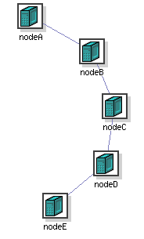

Setting up IP routing between nodes
As DETERLab strives to make all aspects of the network controllable by the user, we do not attempt to impose any IP routing architecture or protocol by default. However, many users are more interested in end-to-end aspects and don't want to be bothered with setting up routes. For those users we provide an option to automatically set up routes on nodes.
You can use the NS rtproto syntax in your NS file to enable routing:
$ns rtproto protocolOption
where the protocolOption is limited to one of Session, Static or Manual.
- Session routing provides fully automated routing support, and is implemented by enabling
gatedrunning of the OSPF protocol on all nodes in the experiment. This is not supported on Windows XP nodes. - Static routing also provides automatic routing support, but rather than computing the routes dynamically, the routes are precomputed by a distributed route computation algorithm running in parallel on the experiment nodes.
- Manual routing allows you to explicitly specify per-node routing information in the NS file. To do this, use the
Manualrouting option tortproto, followed by a list of routes using theadd-routecommand:
$node add-route $dst $nexthop
where the dst can be either a node, a link, or a LAN. For example:
$client add-route $server $router
$client add-route [$ns link $server $router] $router
$client add-route $serverlan $router
Note that you would need a separate add-route command to establish a route for the reverse direction; thus allowing you to specify differing forward and reverse routes if so desired. These statements are converted into appropriate route(8) commands on your experimental nodes when they boot.
In the above examples, the first form says to set up a manual route between $client and $server, using $router as the nexthop; $client and $router should be directly connected, and the interface on $server should be unambiguous; either directly connected to the router, or an edge node that has just a single interface.

If the destination has multiple interfaces configured, and it is not connected directly to the nexthop, the interface that you are intending to route to is ambiguous. In the topology shown to the right, $nodeD has two interfaces configured. If you attempted to set up a route like this:
$nodeA add-route $nodeD $nodeB
you would receive an error since DETERLab staff would not easily be able to determine which of the two links on $nodeD you are referring to. Fortunately, there is an easy solution. Instead of a node, specify the link directly:
$nodeA add-route [$ns link $nodeD $nodeC] $nodeB
This tells us exactly which link you mean, enabling us to convert that information into a proper route command on $nodeA.
The last form of the add-route command is used when adding a route to an entire LAN. It would be tedious and error prone to specify a route to each node in a LAN by hand. Instead, just route to the entire network:
set clientlan [$ns make-lan "$nodeE $nodeF $nodeG" 100Mb 0ms]
$nodeA add-route $clientlan $nodeB
In general, it is still best practice to use either Session or Static routing for all but small, simple topologies. Explicitly setting up all the routes in even a moderately-sized experiment is extremely error prone. Consider this: a recently created experiment with 17 nodes and 10 subnets required 140 hand-created routes in the NS file.
Two final, cautionary notes on routing:
- The default route must be set to use the control network interface. You might be tempted to set the default route on your nodes to reduce the number of explicit routes used. Please avoid this. That would prevent nodes from contacting the outside world, i.e., you.
- If you use your own routing daemon, you must avoid using the control network interface in the configuration. Since every node in the testbed is directly connected to the control network LAN, a naive routing daemon configuration will discover that any node is just one hop away, via the control network, from any other node and all inter-node traffic will be routed via that interface.